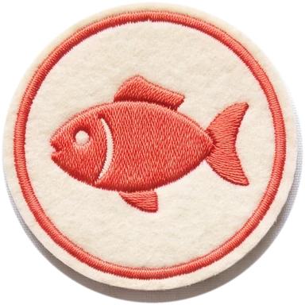
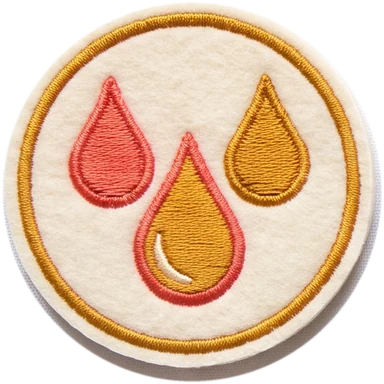
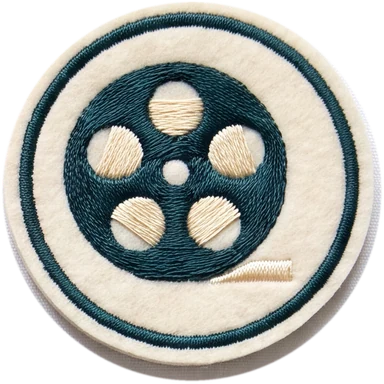
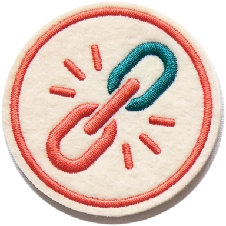
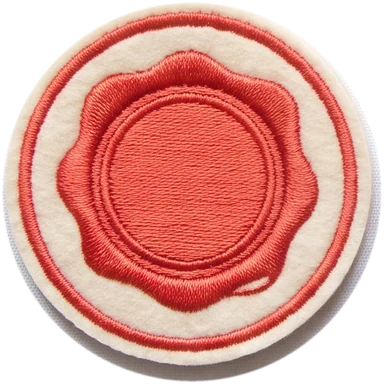
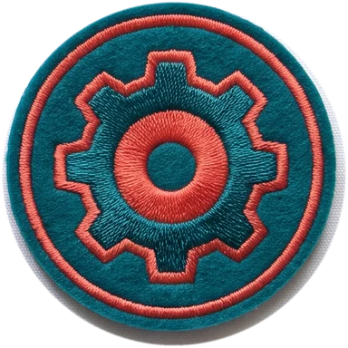
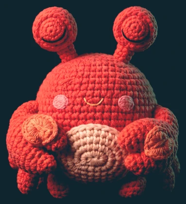

Smart crop, face safe
The crop window finds the subject and keeps detected faces whole instead of clipping them at the edge. A YuNet model finds the faces, and :face crops to the largest one.


crop:760x760:smartcrop:760x760:face
Written in Rust · MIT licensed
The URL is the API. Write the operations into it, sign it, and crabcrop answers with the picture. A Rust-built image server in one binary: no pre-generated thumbnails, no build step.

demo-secret.
Just a small sample: crabcrop has 51 filters in all, and the size, look and format picks above are only a few of the operations. The docs list every one.
Install
Prebuilt for macOS and Linux, on x86_64 and arm64.
curl --proto '=https' --tlsv1.2 -LsSf https://github.com/dayvson/crabcrop/releases/latest/download/crabcrop-installer.sh | sh
export CRABCROP_SECRET="$(openssl rand -hex 16)"
CRABCROP_ALLOW_UNSAFE=1 crabcrop
# crabcrop listening on port 3000curl "http://localhost:3000/unsafe/300x200/https://example.com/photo.jpg" \ --output photo.jpg
curl "$(crabcrop sign 300x200/https://example.com/photo.jpg)" --output photo.jpg
docker pull ghcr.io/dayvson/crabcrop:0.14.0docker pull ghcr.io/dayvson/crabcrop-ai:0.14.0cargo install crabcropAnatomy
Every image request is GET /<signature>/. That strip is the whole grammar.
https://
Signature 1 of 3
Proof the URL came from you. The server recomputes the HMAC-SHA256 over the operations and the source exactly as they appear. A match serves the image. A miss gets a 403.
A sealed URL keeps its whole recipe in this slot, as one opaque token.
5b9fc0ad…s1.<token>
Operations 2 of 3
Zero or more segments, applied in path order. Resize, crop, fit-in, and pad are their own segments. Filters chain inside one filters: segment.
An expiry and a server-side preset are segments too.
300x200crop:1200x630:smartfilters:grayscale:format(webp)exp:1893456000preset:og-card
Source 3 of 3
It starts at the first segment that is not an operation and may contain slashes. A full URL works, and so does a short root: reference the server expands against its own origins.
A video or a PDF works as a source. A segment picks the frame or the page.
https://example.com/photo.jpgroot:photos/print.jpgframe:50%page:2
What it does
Each tile shows the segment that asks for it. The pictures are the examples from crabcrop.org.
The crop window finds the subject and keeps detected faces whole instead of clipping them at the edge. A YuNet model finds the faces, and :face crops to the largest one.
crop:760x760:smartcrop:760x760:face
The listing shot in one filter: cut out, backdrop, contact shadow, margin. Backdrops resolve on the server: your brand color by default, or white, or none.


Or keep the photo: scene mode reframes on the subject and corrects the light and color.
filters:studio(product)filters:studio(scene)
Your ONNX model, in process. The subject stays and the background becomes real alpha.


filters:removebg:format(webp)
Blur or pixelate faces, or every detected object of a class. Redaction never guesses: a detection failure fails the request.


filters:blurclass(person)filters:blurfaces

Name no format and the Accept header decides: AVIF first, then JPEG XL, then WebP. An explicit format always wins.
filters:format(avif)

Resize, crop, fit-in, and pad are their own path segments. The 51 filters chain inside one filters: segment and run in the order written.
filters:sharpen(1.2):saturation(1.1)

The input does not have to be a photo. crabcrop decodes one frame of a video or one page of a PDF and serves it as an image, like any other source.
frame:50%page:2

The source in the URL can be a plain https address, an object in S3 or GCS, a file on local disk, or a short root: reference the server resolves against the storage you configured.
s3://bucket/keyroot:photos/print.jpg

For links that stay public but unreadable. The whole recipe, operations and source, is encrypted into one opaque token in the signature slot. Only the server opens it.
s1.<token>/photo.jpg

Server-side preset names keep templates short. Purge one result, or a whole preset group, with signatures from their own subkey.
preset:og-cardPOST /purge-group
Meta reports the C2PA Content Credentials a source carries. With your own certificate, still JPEG, PNG, WebP, and AVIF outputs are signed as served.
CRABCROP_C2PA_CERTCRABCROP_C2PA_KEY
Put explain/ in front of any signed URL and the server reports on it, segment by segment, instead of serving the image.
GET /explain/<signature>/...
Signing
Every URL carries an HMAC-SHA256 signature over the operations and the source, in lowercase hex. Same inputs, same URL, whichever of these you use.
printf '%s' 'crop:1200x630:smart/filters:grayscale/https://example.com/photo.jpg' \ | openssl dgst -sha256 -hmac 'demo-secret' # SHA2-256(stdin)= 5b9fc0ad8492552ef2c0c8af53d26851f958a213d95b1024754a311f48443e05
import { buildURL } from "@crabcrop/url"; const url = buildURL( "https://img.example.com", "demo-secret", "crop:1200x630:smart/filters:grayscale", "https://example.com/photo.jpg", );
from crabcrop_url import build_url url = build_url( "https://img.example.com", "demo-secret", "crop:1200x630:smart/filters:grayscale", "https://example.com/photo.jpg", )
use crabcrop_url::build_url; let url = build_url( "https://img.example.com", Some(b"demo-secret"), "crop:1200x630:smart/filters:grayscale", "https://example.com/photo.jpg", None, )?;
Each snippet signs the same example with the sample secret demo-secret. Swap in your base, your secret, and your operations.
npm install @crabcrop/urlpip install crabcrop_urlcargo add crabcrop-urlEach loader is one file in the repo's frameworks/ directory. Copy it into your project, next to @crabcrop/url.
The repo ships a first-party MCP server over the same SDK and HTTP surface. It runs on stdio and needs nothing else installed.
sign_urlBuild a signed URL, checked against the server grammar.explain_urlExplain a URL segment by segment and verify its signature.fetch_metaFetch the meta JSON for an image URL.purge_resultPurge one cached result by its path.{
"mcpServers": {
"crabcrop": {
"command": "npx",
"args": ["-y", "@crabcrop/mcp"],
"env": {
"CRABCROP_BASE": "https://img.example.com",
"CRABCROP_SECRET": "your-secret"
}
}
}
}
Production
One recipe per platform and one per CDN, each a complete walkthrough in the repo. Every recipe follows the same flow: create the signing secret, deploy, run the smoke checklist.

Run crabcrop behind a reverse proxy or a CDN.
Optional, after any platform.
The server bounds its own work.
403 source_forbidden. On by default.exp: second.Speed
A first request does the whole job: fetch the source, decode it, transform it, encode the answer. These are medians from the benchmark kept in the repo, and crabcrop leads or ties eight of the ten operations.
Fetch a 2400 by 1600 JPEG, decode it, resize it to 800 wide, encode it
18.6ms
Median milliseconds. Output is 800 wide unless said. Lower is better.
| Operation | crabcrop | Thumbor | imgproxy |
|---|---|---|---|
| Resize, JPEG | 18.6 | 42.4 | 19.5 |
| Crop to 400 by 300, JPEG | 19.0 | 71.8 | 13.4 |
| Resize, WebP q80 | 59.8 | 84.1 | 67.5 |
| Resize and grayscale, JPEG | 15.4 | 40.1 | not supported |
| Resize, AVIF q80 | 113.0 | not supported | not available on the benchmark host |
| Resize, JPEG XL q80 | 53.8 | not supported | 45.8 |
| Resize, JPEG q60 | 14.0 | 38.5 | 18.2 |
| Resize, JPEG q95 | 14.4 | 42.4 | 19.8 |
| Resize, WebP q60 | 57.6 | 79.3 | 62.7 |
| Resize, WebP q95 | 69.8 | 93.7 | 75.1 |
imgproxy still wins two rows: the crop to 400 by 300 (13.4 against 19.0) and JPEG XL (45.8 against 53.8), where crabcrop's encoder makes notably smaller files at the same nominal settings and pays for it in speed. A dash is an operation that server could not run. Thumbor 7.8.0 has no AVIF or JPEG XL encoder. Open-source imgproxy has no grayscale option, and its AVIF needs an encoder this host's libheif did not have: a limit of the host, not of imgproxy.
Every server got the same 25 source images and the same ten operations, served from one local origin. Cold means the first request for each image, before any cache can help. Each figure is the median of repeated runs.
Measured 15 November 2026. crabcrop 0.13.0, imgproxy 4.0.24, Thumbor 7.8.0. Host: one small shared VM, 4 cores (AMD EPYC 9D25), 7.7 GiB RAM, Ubuntu 24.04.5 LTS. Small differences are noise; the rankings are the robust part.
Repeat requests matter less than they look: a CDN in front of any of these servers serves most repeats before they arrive. crabcrop answers warm repeats at a 0.2 to 0.4 ms median on every operation, and its warm resize throughput medians 1,874 requests per second at 8 workers. Thumbor medians 25.8 and imgproxy 56.0, neither caching results in these configurations. The full warm data is in the raw JSON beside the results document.
Migrating
The docs carry a mapping guide for each of these.
convert-thumbor verb that rewrites and re-signs a URL.